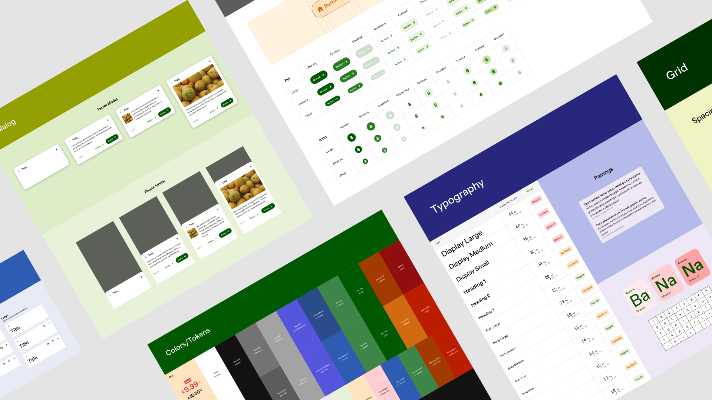

Afresh Design System

The problem
At Afresh, a startup making products for grocery stores, our UI patterns and things like type styles and colors were becoming inconsistent as our design system became out of date. No one really knew how to use the current library (established about a year before) — this was costing us time and affecting quality.
The goals
We needed a shared up-to-date library that would increase our speed and make components consistent.
Research
How did our design team feel about the current system and what needed to change to make it successful? I began an internal research project that consisted of 8 user interviews with the team, along with a workshop to gather further insights and ideas.
I found that my teammates felt using the system was a struggle, they were distrustful of the current library, and often confused by it.
The main problems
One of the main problems turned out to be a lack of strong foundations in our current system. The typography scale wasn't really working well and hadn't been updated for a long time. Whenever designers were designing and wanted to break away from the current type scale, instead of telling the team, they were coming up with their own styles. There was no good feedback loop happening between the team and what they had problems with, and they didn't feel like they could tell people when things weren't working for them.
Auditing
Once we had established our game plan, I set out on completing an audit of our product suite to figure out where there were differences in the system and our live products.

Building stronger foundations
I came up with a new type scale that had more variations in sizing but pretty strict rules about different font weights (only regular and semi-bold were allowed). We used Figma tokens for colors so that everything was easy to update, and began to define spacing rules, something which hadn't been documented or defined.


Components
Once some foundations were established, I began to iterate on some components like tool tips, tags, and modals. We wanted to make them flexible enough to fit many use-cases so that designers wouldn't break off and start building their own again.
We also iterated on the type scale a bit after collecting some feedback from the team.

Final designs
After collecting feedback from the team and watching designers use the system, we realized that our original designs had way too much documentation that was not being read. We refined and rebuilt a super simple library of components instead.
The most important piece was the foundation. Once we had a strong type scale, color tokens documented, and spacing defined, the design system was widely adopted amongst the team.